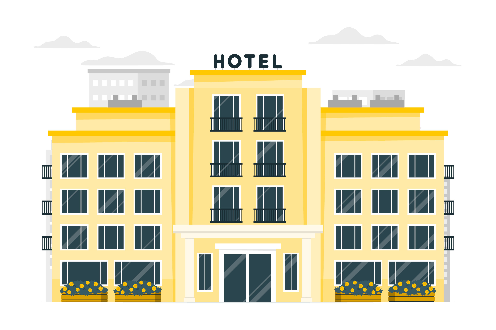

Welcome to my portfolio website.
Recently graduating with a degree in Management
and completing the Data Science Program at Rakamin Academy,
I'm passionate about data analysis and visualization.
Proficient in tools such as Excel, Google Sheets, SQL, Python, Tableau, and Google Data Studio,
I aim to apply my expertise to empower businesses in making informed decisions.
With strong analytical, problem-solving, and communication skills,
I am eager to contribute to the growth of a data-driven organization, bringing both
excitement and proficiency to the team.
Feel free to check out my projects below!

This project aims to analyze the performance of an e-Commerce company by
considering several key metrics, including customer growth, product quality,
and payment types. By examining these metrics, it will be possible to track, monitor,
and assess the company's success and failures.

This project involves analyzing customer behavior in hotel bookings,
exploring links with cancellations through a correlation study. The goal
is to present visualizations for actionable insights, enhancing business
performance in the hospitality sector.

This project focused on using machine learning to predict customer churn, employing advanced data science methodologies to identify potential churners and derive actionable insights for businesses.

This project involves a company aiming to evaluate the effectiveness of its
advertising campaign by analyzing historical data. The goal is to identify
patterns and insights to inform marketing strategies and develop a machine
learning classification model for accurately targeting the appropriate audience
in advertisements.

This project aims to create a sales dashboard for Salicyl products,
emphasizing historical revenue, distribution across clinics and pharmacies,
and sales trends. The goal is to provide the company with valuable insights for data-driven decisions,
enhancing sales strategies and optimizing the overall performance of the Salicyl brand.

Driven by the aim to boost marketing effectiveness, this project revolves around predicting
customer personalities. Through analyzing past marketing campaign data, the objective is to
craft a cluster prediction model, enabling companies to optimize services and benefits for potential loyal
customers, fostering rapid development.
Exploring correlations within the IMDb movie dataset, this project aims to uncover insightful
patterns and relationships among various attributes such as ratings, genres, and origin.